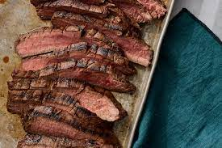

Flank Steak

Description
Delicious, thick slices of flank steak go perfectly with salad or as an entree.
Equipment
- Glass jar or other closed mixing vessel
- A 1-gal Zip-top bag
- Outdoor grill and tongs
Ingredients
Marinade
- 1/2 cup olive oil
- 1/4 cup lemon juice
- 2 cloves garlic, minced
- 1 tablespoon dried minced onion
- 1 1/2 teaspoons flavor enhancer
- 1 1/2 teaspoons salt
- 1 teaspoon black pepper
- 1 teaspoon white sugar
- 1/2 teaspoon dry mustard
- 1/2 teaspoon dried rosemary
- 1/4 teaspoon ground ginger
Steak
Steps
- For marinade: Mix oil, lemon juice, garlic, minced onion, flavor enhancer, salt, pepper, sugar, dry mustard, rosemary, and ginger together in a glass jar. After mixing, place flank steak and marinade in the Zip-top bag and refrigerate for 4 hours.
- Preheat the grill for medium-high heat and lightly oil the grate.
- Remove flank steak from the marinade and shake off excess. Discard remaining marinade.
- Cook on the preheated grill, turning once, until firm and slightly pink in the center, 5 to 8 minutes per side. Slice on a diagonal across the grain to serve.